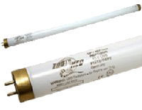

|
PRINCIPIOS BÁSICOS DE ILUMINACIÓN Y TIPOS DE LÁMPARAS
Testudinae.com, 2004
1. Gama de radiaciones.
A
la hora de iluminar un terrario, lo primero que hay que tener claro es
que no basta con que "se vea iluminado", por decirlo de alguna manera.
Las tortugas en la naturaleza reciben de una única fuente, el Sol, una
gama muy amplia de radiaciones, algunas de ellas invisibles, pero de
gran importancia para la salud del animal.
En un terrario deberemos proporcionar toda esa misma gama de
radiaciones. Y lo habitual es que no podamos conseguir todo eso con un
único tipo de lámpara, de manera que tendremos que combinar diferentes
fuentes de luz para que en conjunto la tortuga reciba todo lo que
necesita. Dividimos esa radiación que las tortugas reciben del Sol en
cuatro franjas, que explicaremos ordenándolas de menor a mayor
frecuencia:
1.1. Radiación infrarroja. De frecuencia inferior a la luz
visible. Nuestros ojos no la ven, pero la percibimos en forma de
calor. Es una radiación no dañina (es poco energética y no altera los
tejidos vivos) pero muchos cuerpos la absorben y se convierte en
calor. La Tierra mantiene una temperatura adecuada para la vida
básicamente gracias a la radiación infrarroja que recibe del Sol. Y
las tortugas están adaptadas para aprovechar esa radiación para
regular su temperatura. Cuando la temperatura ambiente es inferior a
los 30 grados, las tortugas buscan ponerse al Sol. Así su cuerpo
absorbe la radiación infrarroja, y consiguen una temperatura corporal
por encima de la temperatura del aire que les rodea.
1.2. Luz visible. Empieza por los colores rojos, de menor
frecuencia y termina en el violeta. Las tortugas utilizan la luz
visible igual que nosotros, para poder ver. Y su ciclo vital se adapta
al ciclo de luz día-noche, y también a los cambios de duración de esa
luz a lo largo de las estaciones del año.
1.3. Radiación ultravioleta A (UV-A). Queda también fuera de
nuestro margen de visión, no la percibimos, en este caso porque su
frecuencia es superior a la máxima que nosotros podemos ver (violeta).
Es más energética, de manera que es capaz ya de provocar ciertos
cambios en los tejidos vivos. Es la responsable de que nos bronceemos
al ponernos al Sol, pues nuestra piel reacciona ante esa radiación
incrementando la producción de pigmentos para protegerse de ella.
Aunque no llega a ser aún muy dañina.
Nosotros no notamos en absoluto si un sistema de iluminación produce
más o menos UV-A, nuestra vista no lo capta. Pero resulta que los ojos
de los reptiles sí que ven algo dentro de la gama UV-A. Y notan la
diferencia, y eso tiene un efecto "psicológico" en ellos. Parece ser
que la luz UV-A tiene un papel importante en la manera como reconocen
la comida, y en ciertos reptiles también para captar el color de
pigmentos de su piel que van ligados al sexo. Por tanto, es importante
proporcionar un nivel de UV-A parecido al del Sol, para que las
tortugas "vean" de manera normal. Eso les ayuda a encontrarse mejor,
estimula su actividad y su apetito.
1.4. Radiación ultravioleta B (UV-B). Más energética aún,
invisible, y con mayor tendencia a provocar reacciones en los tejidos
vivos. Las tortugas no la ven, pero la aprovechan para provocar en su
piel una reacción química que les permite obtener la vitamina D3. Y
esa vitamina es esencial para poder absorber el calcio y poder formar
los huesos y el caparazón. Al mantener una tortuga en interior, sin
acceso a la luz del Sol, se le debe suministrar vitamina D3 con la
comida, o bien, mucho mejor, proporcionarle radiación UV-B para que el
mismo animal pueda obtener la vitamina D3 que necesita. Aunque se
requiere precaución, la radiación UV-B en dosis excesivas puede dañar
gravemente la vista de las tortugas, y también la nuestra.
Testudo graeca
silvestre asoleándose (Sergio Sánchez).
2. Técnicas de producción de radiación.
El
Sol produce esos cuatro tipos de radiación (y muchas más) gracias a
que se trata de un cuerpo incandescente a altísima temperatura: casi
6000 grados en su superficie, y más de dos millones de grados en su
núcleo interior. Como comprenderéis, no es nada fácil tener algo así
dentro de casa. De manera que no existe ninguna lámpara capaz por si
sola de sustituir al Sol. Deberemos utilizar técnicas diferentes para
producir esas diversas gamas de radiación y combinarlas para tener en
conjunto una iluminación lo más correcta posible.
Tenemos básicamente dos técnicas útiles para producir radiación:
2.1. Calentar un metal aplicándole una corriente eléctrica, de
manera que este tiende a volver a su estado inicial liberando en forma
de radiación la energía acumulada. Eso es lo que hace el filamento
incandescente de una bombilla. Con este método se producen frecuencias
muy variadas, porque se dan muchos niveles de energía posibles dentro
del metal caliente. El problema es que, aunque obtener frecuencias
bajas (infrarrojo y luz visible en la gama rojo-amarillo) es muy
fácil, ya no lo es obtener frecuencias altas, pues se requeriría un
filamento a temperatura muy alta, y en la práctica eso no es posible,
cualquier material utilizado se funde. Por tanto de este modo no
podemos obtener UV-A en cantidades apreciables, y mucho menos UV-B.
Según la temperatura a la que trabaja el filamento tendremos:
- Lámparas infrarrojas: Filamento grande que trabaja a poca
temperatura. Emite básicamente radiación infrarroja, útil como medio
de calefacción.
- Lámparas incandescentes ordinarias (bombillas, focos de
asoleamiento): Producen también mayoritariamente infrarrojos, pero
también luz visible, aunque con un nivel de azul muy inferior al de la
luz del Sol.
- Lámparas halógenas: El filamento va encerrado en un tubo de cuarzo
lleno de un gas halógeno que permite que el material evaporado del
filamento se vuelva a depositar de nuevo regenerándolo. Así se
consigue trabajar a más temperatura sin que el filamento se estropee
rápidamente. Por eso la luz producida es menos amarillenta, tiene
mejor proporción de azul. Pero tampoco es suficiente para producir
niveles adecuados de UV-A y aún menos UV-B.
2.2. Utilizar una lámpara sin
filamento (lámpara de descarga), en la que la corriente eléctrica pasa
directamente a través de un gas ionizado. De este modo evidentemente
no existe el problema de un filamento que se funda. Y escogiendo
adecuadamente el gas se pueden conseguir fácilmente radiaciones de
alta frecuencia, como UV-A y UV-B.
Para su uso con reptiles básicamente se emplean lámparas de descarga
de vapor de mercurio, que produce UV-A y UV-B, pero muy poca luz de
frecuencia más baja. Es decir, justo el inconveniente contrario a las
lámparas incandescentes. Y otra pega es que emiten niveles altos de
radiación pero en frecuencias muy concretas, con poca variedad de
frecuencias. Muy diferente a la emisión del Sol (y de las bombillas
incandescentes dentro de su rango útil) que da un espectro mucho más
continuo.
Por tanto se deben combinar de algún modo esas diferentes técnicas
para proporcionar en un terrario toda la gama de radiación que las
tortugas necesitan.
Testudo Kleinmanni calentándose bajo
un foco halógeno (Fernando Pérez).
3. Posibilidades.
3.1. Iluminación completa con una sola lámpara.
Es posible en determinadas condiciones, aunque con una pequeña trampa:
usando una lámpara que en realidad son dos lámparas en una. Existe un
tipo de lámparas para reptiles que combinan en un mismo foco reflector
las dos técnicas que antes hemos explicado: por un lado un filamento
incandescente, que produce calor en forma de infrarrojos y luz visible
(como una bombilla ordinaria), y por otro lado un tubo de descarga de
cuarzo lleno de vapor de mercurio a alta presión, que se encarga de
producir radiación UV-A y UV-B en abundancia.
El filamento incandescente tiene aquí una importante misión, más allá
de la producción de luz: permite el encendido de la lámpara de vapor
de mercurio, ayudando a calentar el gas, y también regula la corriente
que pasa a través del tubo de descarga. De este modo no se necesita
ningún tipo de reactancia para encender y regular la lámpara. Se monta
simplemente en un portalámparas ordinario de rosca conectado
directamente a la red eléctrica.
Básicamente son dos los modelos comerciales de lámpara de este tipo
que podemos utilizar, muy similares: T-Rex UVHeat y Zoomed Powersun.
Las dos se venden normalmente en versiones de 100 W o 160 W, aunque
también se fabrican modelos más potentes para grandes instalaciones.
Son lámparas ya diseñadas para reptiles, y en las que el cristal
exterior está formulado expresamente para dejar pasar la cantidad
adecuada de UV-A y UV-B.
Emiten niveles de UV-B mucho más altos que los tubos fluorescentes
para reptiles. Y son efectivas aunque las situemos a distancias
mayores de 30 cm. (a partir de la cual los tubos sirven de muy poco).
A 30 cm. emiten unos niveles de UV-B similares a los del sol a
mediodía en la zona mediterránea. Y a 60 cm. aún emiten dosis más que
suficientes para un reptil.
Para utilizarla como única fuente de luz y foco de calor, la distancia
la debemos ajustar de modo que la tortuga obtenga una buena
temperatura (32-34 grados) al asolearse debajo de la lámpara. Yo he
observado que la distancia correcta es de unos 42-45 cm. para los
modelos de 100 W y de 50-55 cm. para los de 160 W. Lo cual ya está
dentro del rango útil de la lámpara respecto a la emisión de UV-B.
|

Powersun, de Zoomed®. |

UV-Heat, de T-Rex®. |
Ventajas: Montaje simple, sin largos tubos y soportes llenando la zona
superior del recinto. Y se puede poner a mayor distancia que los
tubos, como se ha explicado. Muy cómodo por tanto para instalaciones
del tipo "mesa de tortugas". Niveles de UV-B elevados y que se
mantienen así durante más de dos años, a diferencia de los tubos que
empiezan a perder eficacia al cabo de unos meses y se deben sustituir
al menos una vez al año.
Inconvenientes: precio elevado (unos 95 euros) aunque su mayor
duración y el no necesitar soportes caros ni reactancias puede llegar
a compensar eso. Difíciles de conseguir hasta ahora, especialmente los
modelos de 100 W. Normalmente se encuentran sólo en tiendas muy
especializadas en reptiles, y aún así muchas veces por encargo. Aunque
poco a poco se empiezan a popularizar. En Alemania ya cuestan casi la
mitad que aquí.
Sus altas emisiones UV-B pueden llegar a ser perjudiciales para una
tortuga que no tenga posibilidad de escapar de ellas. No son
aconsejables para pequeños terrarios cerrados de cristal. Pero sí van
bien en instalaciones tipo "mesa de tortugas" más abiertas, situando
la lámpara a un lado, y dejando en en lado opuesto una zona poco
expuesta y con algún refugio. Y sólo para especies de tortugas bien
adaptadas a condiciones de luz solar intensa. Con especies de selvas
tropicales, etc., mejor buscar soluciones de iluminación más moderada.
Y por último, el filamento es frágil, se puede fundir fácilmente, como
en una bombilla ordinaria, y dejar inutilizada la lámpara. Es
fundamental no mover la lámpara mientras funciona, y montarla en un
soporte sólido, a salvo de vibraciones. Por ejemplo, un soporte bien
fijado a la pared, por encima del terrario. Si se hace así la lámpara
puede durar hasta tres años. En caso contrario difícilmente durará más
de 6 meses. También requiere un portalámparas cerámico de calidad, que
no se recaliente, y debe funcionar en posición completamente vertical,
porque si no es así la protección térmica de la lámpara se disparará y
funcionará de modo intermitente, con lo que se acabará estropeando.
Habría que añadir
un comentario sobre las lámparas de vapor de mercurio
de alumbrado convencional, como las Osram HQL Deluxe, no diseñadas
específicamente para reptiles.
Muchos aficionados utilizan las HQL en terrarios y las consideran
válidas como fuente de UV-B para tortugas. Es una idea que se ha
difundido bastante, sobre todo unos años atrás. Estas recomendaciones
venían de aficionados en foros, o a lo sumo de alguna tienda de
accesorios que también las vendía, pero sin ningún dato concreto que
avalase su producción de UV-B. En cambio, todos los sitios serios que
recomiendan las lámparas de vapor de mercurio (Tortoise Trust, etc.)
siempre se refieren a lámparas diseñadas para reptiles, básicamente la
UV-Heat, que fue la primera que apareció en el mercado.
Cuando no existían todavía las lámparas especiales para reptiles,
parece lógico que se experimentase con lámparas de alumbrado
convencional, pero hoy en día no es necesario poner en riesgo la salud
de los animales basándose en suposiciones, cuando existen lámparas ya
pensadas para eso. Lo único "oficial" respecto al uso de las HQL con
reptiles es que no hay datos oficiales. No hay datos del espectro de
las Osram HQL Deluxe en la zona UV-B. Lógico pues no es una lámpara
pensada para eso, y Osram no se molesta en ofrecer esos análisis. Lo
que sí hay son espectros de lámparas similares de Sylvania (marca que
también es propiedad de Osram) y de la Osram HWL (de luz negra) que NO
muestran ninguna emisión apreciable de UV-B en la zona útil para
reptiles. ¿Se podría aún así creer que la HQL Deluxe es diferente y
si emite UV-B? Es muy poco probable, e incluso poco lógico. Por dentro
todas son parecidas, el tubo de descarga de cuarzo sí que emite UV-B
en cantidad, pero el problema es el cristal exterior. Los fabricantes
de lámparas para reptiles ya buscan expresamente cristales que dejen
pasar UV-B, pero para una lámpara de alumbrado es innecesario, absurdo
y peligroso hacerlo así. En todas las lámparas modernas de descarga de
Osram es justo al revés, les añaden expresamente un filtro UV. En la
HQL Deluxe no es así (hasta ahora) por eso emiten UV-A, pero de ahí a
que emitan UV-B, hay un buen trecho. Es posible que algún modelo de
HQL fabricado en algún momento, por alguna casualidad, tenga un
cristal que sí dejaba pasar UV-B, pero es arriesgado fiarse entonces,
porque eso puede haber variado mucho a lo largo de los años de
fabricación de la HQL, de una serie a otra, o según el lugar donde se
ha fabricado, etc. Sin un medidor de UV-B a mano, es inútil especular
sobre su producción d UV-B.
Dicho sea de paso, de medidores de UV-B hasta hace poco sólo
conocíamos los de Zoomed, que son muy, muy caros. Pero los
Solarmeter 6.2
tienen ahora un precio ya más asequible, 179 dólares. Sería, no sólo
la manera de salir de dudas, sino también una buena ayuda para
comprobar el buen estado y la duración de tubos y lámparas. Para un
aficionado que utilice de forma habitual varias lámparas o tubos para
reptiles, un medidor así parece una buena inversión. En la
lista de
correo de estos medidores nunca se han preocupado de dar
mediciones de lámparas de vapor de mercurio de alumbrado público, sólo
de modelos específicos para reptiles. Cosa que hace dudar aún más de
que realmente las HQL emitan algo de UV-B.
3.2. Iluminación combinada con tubos fluorescentes y lámparas
incandescentes.
Es la solución más clásica y probada para proporcionar toda la
radiación que requiere la tortuga.
Un tubo fluorescente está lleno de un gas inerte (argón) que
contiene pequeñas cantidades de mercurio. En los extremos, dos
electrodos hacen pasar corriente a través del gas. Una reactancia
regula la cantidad de corriente, y un circuito cebador ayuda en el
momento del encendido. Se trata en realidad de una lámpara de descarga
en vapor de mercurio pero a baja presión. Eso produce casi
exclusivamente luz ultravioleta. Pero interviene en este punto la
sustancia "fluorescente" que recubre el interior del tubo. Ese
material absorbe la luz ultravioleta producida por el gas, y luego
vuelve a liberar esa energía emitiendo luz visible, de tonalidades que
varían según la combinación de substancias fluorescentes empleadas,
que son habitualmente diferentes compuestos de fósforo. Los
fluorescentes producen muy poco calor, no emiten apenas infrarrojos,
por tanto se deben usar en un terrario siempre combinados con otro
tipo de lámparas que sí produzcan infrarrojos.
Los fabricantes de fluorescentes para reptiles los comercializan de
diferentes tipos, que se suelen nombrar a partir del porcentaje de
radiación UV-B que emiten, en relación al total de radiación (visible,
UV-A y UV-B, todo junto) que emite el tubo: se habla así de tubos 2.0,
tubos 5.0 y 8.0, que emiten un 2% de UV-B, un 5% y un 8%
respectivamente.
|

Tubo
Reptisun de Zoomed®.
|
Pantalla para
tubos fluorescentes. |
- Tubos 2.0: están pensados para situaciones en que no se
requiere un elevado nivel de UV-B (serpientes, anfibios, etc.), y en
cambio se intenta producir una luz lo más natural posible para el
animal, con un buen nivel de UV-A y tonalidades tan parecidas como se
pueda a la luz solar. Los tubos 2.0 son los que tienen mejor índice de
color (CRI), es decir, los que iluminan reproduciendo los colores de
la manera más parecida a como se verían a la luz del sol. Pero por sí
solos, no proporcionan suficiente UV-B para que una tortuga sintetice
adecuadamente la vitamina D3. Pueden ser útiles en un terrario de
tortugas para completar la iluminación, suponiendo que ya se disponga
de otras fuentes de UV-B. Por ejemplo, pueden servir para iluminar de
forma natural el extremo "oscuro" de una mesa de tortugas que ya tenga
en el otro lado una lámpara de vapor de mercurio como las citadas en
el anterior apartado A.
- Tubos 5.0: pensados expresamente para facilitar la producción
de vitamina D3 en reptiles. Emiten un 5% de radiación UV-B y un 30% de
UV-A. El resto es luz visible. No tienen un índice de color tan bueno
como los 2.0 (su luz es demasiado azulada). La solución de iluminación
más clásica en un terrario es utilizar un sólo tubo 5.0 (o varios,
según el tamaño del terrario) situado a menos de 30 cm. de la tortuga,
combinado con una bombilla o foco reflector incandescente, que añade
luz en la franja del rojo-anaranjado y proporciona calor para que el
animal pueda asolearse bajo la lámpara. Más adelante, cuando hablemos
de ventajas e inconvenientes, me referiré sobretodo a esta combinación
- Tubos 8.0: Con un 8% de UV-B. Algunos fabricantes los venden
para terrarios de tipo desértico (Exo Terra Repti Glo 8.0). En cambio,
algún fabricante tan reconocido como Zoomed se niega a fabricar tubos
con más de un 5% de UV-B, por los posibles riesgos para la visión.
- Fluorescentes compactos: Además de estos clásicos tubos
fluorescentes rectos, en los últimos años han aparecido también en el
mercado fluorescentes compactos, a imitación de las bombillas de bajo
consumo domésticas. El primero fue el Arcadia D3 compact reptile lamp,
con un 7% de UV-B y un 30 % de UV-A. La misma marca también vende
ahora un modelo de tipo 2.0. Y Zoomed también ha empezado a
comercializar lámparas compactas de este tipo, en versiones 5.0 y 10.0
(aquí parece que sí se han decidido a aumentar los niveles de UV-B).
Los fluorescentes compactos son en todo equivalentes a los tubos, pero
de montaje más cómodo, basta un simple soporte con casquillo de rosca.
Aunque son bastante más caros, pues incluyen el sistema de encendido.
Y cuando se substituye el fluorescente, se cambia todo a la vez,
mientras que en los tubos rectos la reactancia se mantiene al renovar
el tubo, así a la larga resultan mucho más económicos.
|

Fluorescente compacto de Arcadia®. |

Portalámparas
para compactas. |
Ventajas e inconvenientes de los tubos para reptiles
- Ventajas: Precio Un tubo 5.0 cuesta entre 15 y 45 euros, según
marcas y tamaños. Bajo consumo, aunque habrá que sumarle una lámpara
incandescente para proporcionar calor.
- Inconvenientes: Montaje algo aparatoso. Fácil en terrarios o
acuaterrarios que ya tienen previsto un lugar para alojar tubos
fluorescentes. En este caso es vital eliminar cualquier cristal o
lámina protectora que tape el fluorescente, la luz debe llegar
directamente del tubo a la tortuga, sin atravesar ningún material que
impida el paso de la luz UV-B. En alojamientos hechos a medida será
necesario comprar un soporte para tubos, o hacerlo nosotros mismos
comprando en una ferretería los soportes, la reactancia, cebador, etc.
Alcance escaso: Apenas son efectivos si se sitúan a más de 30 cm. del
animal. En ciertas instalaciones colocar tubos suspendidos tan cerca
de las tortugas puede ser algo engorroso.
Duración limitada. Se deben cambiar al menos una vez al año, pues
aunque el tubo aparentemente funcione bien, su emisión de UV-B se va
reduciendo. Y el problema es que un tubo a veces puede fallar
prematuramente en ese aspecto, y es difícil de detectar ese descenso
sin un medidor de niveles de UV-B (un artilugio bastante caro). Para
más seguridad es mucho mejor montar dos tubos a la vez en el terrario.
Los tubos fluorescentes producen muy poco calor. Por eso son tan
eficientes como fuente de luz, la energía eléctrica que consumen se
dedica a producir luz visible, pero apenas radiación infrarroja, que
para la iluminación de una vivienda o local es un gasto inútil. Pero
resulta que una tortuga sí que necesita radiación infrarroja, para
calentarse y regular su temperatura corporal, como explicamos al
principio.
Por tanto, además del fluorescente necesitamos añadir algún tipo de
lámpara incandescente que produzca infrarrojos, al menos sobre una
parte del terrario. Se trata de crear un punto caliente, una zona
donde la tortuga pueda calentarse y conseguir una temperatura de unos
32-34 grados. Por muy correcta que sea la temperatura "general" del
terrario, esa zona de calor radiado extra es imprescindible. El tipo
de lámpara, su potencia y sobre todo la distancia a la que la
coloquemos, se deben escoger adecuadamente de cara a conseguir esa
temperatura de 32-34 grados bajo la lámpara. Podemos utilizar para
ello:
- Bombillas ordinarias: Son la opción más barata, de hecho
cualquier bombilla sirve.
- Focos reflectores: También corrientes y baratos, con
casquillo de rosca, comprados en ferreterías. Son bastante más
eficientes, pues concentran mejor el calor en una zona. La potencia
requerida variará según lo amplia que sea la zona que queramos
calentar. Una lámpara más potente, la situaremos más lejos, y
mantendrá la temperatura alta en una zona más amplia, aunque a costa
de un mayor consumo.
|
Foco reflector. |
Portalámparas
con pinza. |
Portalámparas
con brazo flexible. |
Para una o dos tortugas pequeñas puede bastar crear un pequeño punto
de asoleamiento con una bombilla reflectora de 40 W de rosca pequeña,
montada en una lámpara orientable con soporte de pinza, de esas
baratas para escritorios. Útil por ejemplo para calentar la "isla" o
piedra fuera del agua en un acuaterrario para pequeñas tortugas
acuáticas. La distancia entre la bombilla y la tortuga en ese caso
debe ser pequeña, menos de 20 cm. Se debe medir la temperatura con un
termómetro para determinar la distancia correcta. Hay que tener
cuidado de que la tortuga no pueda llegar a tocar nunca la bombilla,
pues sufriría quemaduras graves, Vigilad a medida que la tortuga
crezca, o si tenéis varias tortugas acuáticas tened en cuenta que se
suelen subir unas encima de otras para encontrar un sitio bajo la
lámpara. Si existe peligro, deberéis poner una bombilla más potente
pero situada a mayor distancia.
Para tortugas mayores, o en un terrario de terrestres, ya suele ser
más práctico utilizar focos de rosca grande, a partir de 60 W.
Como ya se ha dicho, se debe emplear un termómetro para determinar la
temperatura correcta. Aunque eso tiene ya su dificultad: no estamos
midiendo la temperatura "ambiente" sino calor radiado (infrarrojos) y
lo que marcará el termómetro dependerá mucho de cómo absorbe el propio
termómetro los infrarrojos. Los termómetros de alcohol teñido sí que
absorben bien la radiación, y dan una buena medida del calor que está
generando la bombilla. Pero los termómetros electrónicos con sonda de
funda metálica, reflejan la radiación y apenas se calientan, de modo
que darán una lectura mucho más baja.
El método más fiable diría que es medir poniendo la punta del
termómetro ligeramente enterrada en el substrato (lo justo para que
quede tapada, y dejar la lámpara funcionando mucho rato. Eso dará un
valor bastante parecido a la temperatura que alcanza la tortuga bajo
la lámpara.
|

Portalámparas
de cerámica. |
Portalámparas
con protección. |
Portalámparas
para lámparas de cerámica. |
- Focos de asoleamianto especiales para reptiles ("basking lamps"):
Más caros, y sin grandes ventajas, salvo que están
corregidos para que den una luz más azulada, más parecida a la luz
diurna. Pero que quede claro que esa corrección se consigue por
"filtrado", es decir, eliminando algo de rojo. En ningún modo son
lámparas que produzcan mucha luz azul, y aún menos luz ultravioleta.
Por mucho que lo anuncie el fabricante, esas lámparas no producen UV-B. Son simples bombillas incandescentes.
- Lámparas halógenas: Hemos hablado de ellas al principio del
tema. Esas sí que producen una luz más natural, con mayor contenido de
azul (aunque tampoco emiten UV-B en cantidades apreciables), pues el
tubo lleno de gas halógeno permite que el filamento trabaje a mayor
temperatura. Son por ello bastante interesantes para reptiles, aunque
más caras, y si son del tipo "tubo" necesitarán su correspondiente
soporte reflector.
- Bombillas infrarrojas: Aquí es justo lo contrario, una
bombilla incandescente con un filamento grueso que trabaja a
temperaturas bajas (como una bombilla de linterna cuando se le van
acabando las pilas). Emite la mayor parte de su radiación en la franja
del infrarrojo, y poca luz visible. Además suelen tener el cristal de
color rojo oscuro para reducir aún más la parte de luz visible. La
ventaja es que el filamento se desgasta menos, son lámparas de mayor
duración. Pueden ser útiles para suplementar el calor radiado por
lámparas de luz visible. Pero no conviene usar exclusivamente un foco
infrarrojo para el asoleamiento. Las tortugas instintivamente buscan
las zonas de luz intensa para calentarse. Si sólo tienen un foco
infrarrojo, también lo usarán, pero les costará bastante más
orientarse hacia la zona de temperatura óptima.
- Lámparas cerámicas: Acentuando aún más el principio de las
infrarrojas, son lámparas que calientan pero no emiten nada de luz
visible. Más caras pero de muy larga duración. Útiles para calentar un
terrario sin añadir más luz, y especialmente como fuente de calor
durante la noche, sin emitir luz que moleste a los animales. Pero como
foco exclusivo de asoleamiento, pues se puede decir lo mismo que para
las infrarrojas. Cuidado también con las lámparas cerámicas de elevada
potencia. Por motivos de seguridad deberían ir reguladas con
termostato para evitar temperaturas excesivas que podrían ser fatales
para las tortugas.
|

Foco de
asoleamiento.
|
Bombilla
infrarroja. |
|
Lámpara
halógena.
|
Lámpara
cerámica.
|
|